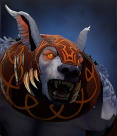

Dota Manual
Dota добра

Ursa

Біографія
Ульфсаар Воїн — найлютіший член ведмежого племені, який захищає свою землю та свій народ. Протягом довгих зим, поки матері сплять і годують своїх ведмежат, чоловіки невпинно та невтомно патрулюють землі, дотримуючись давніх звичаїв. Усе більше й більше до Ульфсаара доходили чутки про наближення темряви до його рідної землі, що змусило його покинути батьківщину, щоби знищити загрозу, яка нависла над його народом та землею. Він — горде створіння із сильнии духом, вірний товариш, сильний і мужній захисник.
| 24 + 2.6 | |||||
| 18 + 2.4 | |||||
| 16 + 1.5 | |||||
| 24 - 28 | |||||
| 1 | |||||
| 310 | |||||
| Рівень | 1 | 15 | 25 | 30 | |
|---|---|---|---|---|---|
| Пошкодження | 42-46 | 75-79 | 99-103 | 111-115 | |
| Здоров'я | 680 | 1400 | 1920 | 2180 | |
| Мана | 267 | 519 | 699 | 783 | |
| Захист | 3.88 | 9.26 | 13.1 | 15.02 | |
| Час атаки | 1.39 | 1.03 | 0.87 | 0.81 | |
| Атак в секунду | 0.69 | 0.89 | 1.03 | 1.1 | |
| Дальність огляду | 1800 / 800 | ||||
| Дальність атаки | 150 (ближній бій) | ||||
| Базовий реген | 0.5 | ||||
| Базовый манареген | 0 | ||||
| Дерево навичок | Рівень | Навик | |||
| 25 | +3 к числу атак от Overpower | +480 к радиусу Earthshock | |||
| 20 | +12 к урону от Fury Swipes | +1.2 сек. действия Enrage | |||
| 15 | +2 к восстановлению маны | +12 к ловкости | |||
| 10 | +175 к здоровью | +20 к длительности Fury Swipes | |||